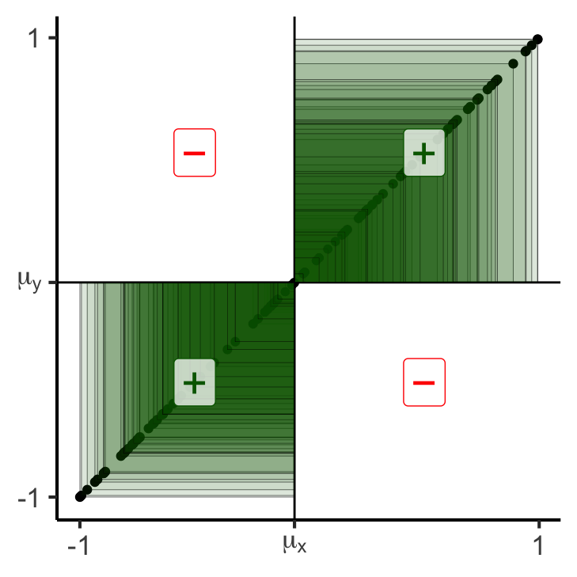
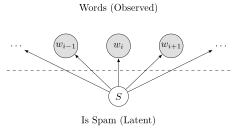

Week 7: Supervised Learning
DSAN 5000: Data Science and Analytics
Section 02
Tuesday, October 3, 2023
In Pictures
Code
library(tidyverse)
N <- 50
x_min <- 1
x_max <- 5
x_vals <- runif(N, x_min, x_max)
noise_vals <- rnorm(N, 0, exp(5))
my_exp <- function(x) exp(3*x + 1)
y_exp <- my_exp(x_vals) + noise_vals
exp_df <- tibble(x=x_vals, y=y_exp)
ggplot(exp_df) +
stat_function(data=data.frame(x=c(x_min,x_max)), fun = my_exp, linewidth = g_linewidth, linetype="dashed") +
geom_point(aes(x=x, y=y), size = g_pointsize / 2) +
dsan_theme("half") +
labs(
title="y = exp(3x + 1), Linear Scale"
)
Code
# Log2 scaling of the y axis (with visually-equal spacing)
library(scales)
ggplot(exp_df) +
stat_function(data=data.frame(x=c(x_min,x_max)), fun = my_exp, linewidth = g_linewidth, linetype="dashed") +
geom_point(aes(x=x, y=y), size = g_pointsize / 2) +
dsan_theme("half") +
scale_y_continuous(trans = log_trans(),
breaks = log_breaks()) +
labs(
title="y = exp(3x + 1), Log Scale"
)\[ y = e^{mx + b} \iff \log(y) = mx + b \]
Covariance: Intuition 1.0
- If we are at the mean \((\mu_x,\mu_y)\), what is likelihood points to the right are also above?
- Similarly,what is the likelihood that points to the left are also below?
Code
library(tidyverse)
library(latex2exp)
gen_y_noisy <- function(x_val, eps) {
lower <- max(-1, x_val - eps)
upper <- min(1, x_val + eps)
y_noisy <- runif(1, lower, upper)
return(y_noisy)
}
N <- 100
x_vals <- runif(N, -1, 1)
x_mean <- mean(x_vals)
y_collinear <- x_vals
y_coll_mean <- mean(y_collinear, drop.na = TRUE)
df_collinear <- tibble(x=x_vals, y=y_collinear, rel="collinear")
# Force the points to be inside [-1,1]
y_noisy <- x_vals
for (i in 1:length(y_noisy)) {
cur_x_val <- x_vals[i]
y_noisy[i] <- gen_y_noisy(cur_x_val, 0.75)
}
y_noisy_mean <- mean(y_noisy, na.rm = TRUE)
#print(y_noisy_mean)
df_noisy <- tibble(x = x_vals, y = y_noisy, rel="noise")
# Label vals above and below mean
label_df <- tribble(
~x, ~y, ~label,
0.5, 0.5, "+",
-0.5, -0.5, "+",
0.5, -0.5, "\u2212",
-0.5, 0.5, "\u2212"
)
gen_cov_plot <- function(df) {
x_mean = mean(df$x)
y_mean = mean(df$y)
ggplot(df, aes(x=x, y=y)) +
geom_point() +
geom_vline(xintercept = x_mean) +
geom_hline(yintercept = y_mean) +
#facet_grid(. ~ rel) +
geom_label(
data=label_df,
aes(x=x, y=y, label=label, color=label),
alpha=0.75,
size = g_pointsize * 1.5
) +
scale_color_manual(values=c("darkgreen","red")) +
dsan_theme() +
remove_legend() +
theme(
#axis.text.x = element_blank(),
axis.title.x = element_blank(),
#axis.ticks.x = element_blank(),
#axis.text.y = element_blank(),
#axis.ticks.y = element_blank(),
axis.title.y = element_blank()
) +
xlim(c(-1,1)) + ylim(c(-1,1)) +
coord_fixed(ratio=1) +
scale_x_continuous(breaks=c(-1, x_mean, 1), labels=c("-1",TeX(r"($\mu_x$)"),"1")) +
scale_y_continuous(breaks=c(-1, y_mean, 1), labels=c("-1",TeX(r"($\mu_y$)"),"1"))
}
gen_cov_table <- function(df, print_matches = FALSE) {
x_mean <- mean(df$x, na.rm = TRUE)
y_mean <- mean(df$y, na.rm = TRUE)
df <- df |> mutate(
x_contrib = ifelse(x > x_mean, "+", "-"),
y_contrib = ifelse(y > y_mean, "+", "-"),
match = x_contrib == y_contrib
)
contrib_crosstab <- table(df$y_contrib, df$x_contrib)
colnames(contrib_crosstab) <- c("x-", "x+")
rownames(contrib_crosstab) <- c("y-", "y+")
if (!print_matches) {
print(contrib_crosstab)
} else {
# Num matches
num_matches <- sum(df$match)
num_mismatch <- nrow(df) - num_matches
writeLines(paste0(num_matches, " matches, ",num_mismatch," mismatches"))
writeLines("\nCovariance:")
writeLines(paste0(cov(df$x, df$y)))
}
}
gen_cov_plot(df_collinear)
x- x+
y- 52 0
y+ 0 48100 matches, 0 mismatches
Covariance:
0.362863392533641
x- x+
y- 47 7
y+ 5 4188 matches, 12 mismatches
Covariance:
0.245448747040713Code
x- x+
y- 12 37
y+ 40 1123 matches, 77 mismatches
Covariance:
-0.223037477183319Covariance: Intuition 2.0
- Now, rather than just is this point above-right? (binary), let’s compute how above-right it is!:
Code
gen_rect_plot <- function(df, col_order=c("red","darkgreen")) {
x_mean = mean(df$x)
y_mean = mean(df$y)
df <- df |> mutate(
x_contrib = ifelse(x > x_mean, "+", "-"),
y_contrib = ifelse(y > y_mean, "+", "-"),
match = x_contrib == y_contrib
)
ggplot(df, aes(x=x, y=y)) +
geom_point() +
geom_vline(xintercept = x_mean) +
geom_hline(yintercept = y_mean) +
#facet_grid(. ~ rel) +
geom_rect(aes(xmin=x_mean, xmax=x, ymin=y_mean, ymax=y, fill=match), color='black', linewidth=0.1, alpha=0.075) +
scale_color_manual(values=c("darkgreen","red")) +
scale_fill_manual(values=col_order) +
geom_label(
data=label_df,
aes(x=x, y=y, label=label, color=label),
alpha=0.75,
size = g_pointsize * 1.5
) +
dsan_theme() +
remove_legend() +
theme(
#axis.text.x = element_blank(),
axis.title.x = element_blank(),
#axis.ticks.x = element_blank(),
#axis.text.y = element_blank(),
#axis.ticks.y = element_blank(),
axis.title.y = element_blank()
) +
xlim(c(-1,1)) + ylim(c(-1,1)) +
coord_fixed(ratio=1) +
scale_x_continuous(breaks=c(-1, x_mean, 1), labels=c("-1",TeX(r"($\mu_x$)"),"1")) +
scale_y_continuous(breaks=c(-1, y_mean, 1), labels=c("-1",TeX(r"($\mu_y$)"),"1"))
}
gen_rect_plot(df_collinear, col_order=c("darkgreen","red"))
x- x+
y- 52 0
y+ 0 48100 matches, 0 mismatches
Covariance:
0.362863392533641
x- x+
y- 47 7
y+ 5 4188 matches, 12 mismatches
Covariance:
0.245448747040713Covariance: Intuition 3.0
- This means that if we break out of \([-1,1]\), covariance will grow even larger:
Code
# Label vals above and below mean
N <- 100
x_min_expanded <- -5
x_max_expanded <- 15
gen_y_noisy_expanded <- function(x_val, x_min, x_max, eps) {
lower <- max(x_min, x_val - eps)
upper <- min(x_max, x_val + eps)
y_noisy <- runif(1, lower, upper)
return(y_noisy)
}
x_vals_expanded <- runif(N, x_min_expanded, x_max_expanded)
x_mean_expanded <- mean(x_vals_expanded)
y_collinear_expanded <- x_vals_expanded
y_mean_collinear_expanded <- mean(y_collinear_expanded)
df_collinear_expanded <- tibble(x=x_vals_expanded, y=y_collinear_expanded, rel="collinear")
gen_rect_plot_expanded <- function(df, col_order=c("red","darkgreen")) {
x_mean <- mean(df$x)
x_mean_str <- sprintf("%.2f", x_mean)
x_mean_tex <- paste0("($\\mu_x = ",x_mean_str,"$)")
y_mean = mean(df$y)
y_mean_str <- sprintf("%.2f", y_mean)
y_mean_tex <- paste0("($\\mu_y = ",y_mean_str,"$)")
label_df_expanded <- tribble(
~x, ~y, ~label,
# Upper right
(x_mean + x_max_expanded) / 2, (y_mean + x_max_expanded) / 2, "+",
(x_min_expanded + x_mean) / 2, (x_min_expanded + y_mean) / 2, "+",
(x_mean + x_max_expanded) / 2, (x_min_expanded + y_mean) / 2, "\u2212",
(x_min_expanded + x_mean) / 2, (y_mean + x_max_expanded) / 2, "\u2212"
)
df <- df |> mutate(
x_contrib = ifelse(x > x_mean, "+", "-"),
y_contrib = ifelse(y > y_mean, "+", "-"),
match = x_contrib == y_contrib
)
ggplot(df, aes(x=x, y=y)) +
geom_point() +
geom_vline(xintercept = x_mean) +
geom_hline(yintercept = y_mean) +
#facet_grid(. ~ rel) +
geom_rect(aes(xmin=x_mean, xmax=x, ymin=y_mean, ymax=y, fill=match), color='black', linewidth=0.1, alpha=0.075) +
scale_color_manual(values=c("darkgreen","red")) +
scale_fill_manual(values=col_order) +
geom_label(
data=label_df_expanded,
aes(x=x, y=y, label=label, color=label),
alpha=0.75,
size = g_pointsize * 1.5
) +
dsan_theme() +
remove_legend() +
theme(
#axis.text.x = element_blank(),
axis.title.x = element_blank(),
#axis.ticks.x = element_blank(),
#axis.text.y = element_blank(),
#axis.ticks.y = element_blank(),
axis.title.y = element_blank()
) +
coord_fixed(ratio=1) +
xlim(c(x_min_expanded,x_max_expanded)) +
ylim(c(x_min_expanded,x_max_expanded)) +
scale_x_continuous(breaks=c(x_min_expanded, x_mean, x_max_expanded), labels=c("-5",TeX(x_mean_tex),"15")) +
scale_y_continuous(breaks=c(x_min_expanded, y_mean, x_max_expanded), labels=c("-5",TeX(y_mean_tex),"15"))
}
gen_rect_plot_expanded(df_collinear_expanded, col_order=c("darkgreen","red"))
x- x+
y- 52 0
y+ 0 48100 matches, 0 mismatches
Covariance:
29.7997084176711Code
# Force the points to be inside [-1,1]
y_noisy_expanded <- x_vals_expanded
for (i in 1:length(y_noisy_expanded)) {
cur_x_val_expanded <- x_vals_expanded[i]
y_noisy_expanded[i] <- gen_y_noisy_expanded(cur_x_val_expanded, x_min_expanded, x_max_expanded, 5)
}
y_noisy_expanded_mean <- mean(y_noisy_expanded, na.rm = TRUE)
#print(y_noisy_mean)
df_noisy_expanded <- tibble(x = x_vals_expanded, y = y_noisy_expanded, rel="noise")
gen_rect_plot_expanded(df_noisy_expanded)
x- x+
y- 44 5
y+ 8 4387 matches, 13 mismatches
Covariance:
23.927335626913Code
gen_y_noisy_neg <- function(x_val, x_min, x_max, eps) {
lower <- max(x_min, x_val - eps)
upper <- min(x_max, x_val + eps)
y_noisy <- runif(1, lower, upper)
return(y_noisy)
}
y_noisy_neg_expanded <- x_vals_expanded
for (i in 1:length(y_noisy_neg_expanded)) {
cur_x_val_expanded <- x_vals_expanded[i]
#y_noisy_neg_expanded[i] <- x_mean_expanded - (gen_y_noisy_expanded(cur_x_val_expanded, x_min_expanded, x_max_expanded, 5) - x_mean_expanded)
y_noisy_neg_expanded[i] <- 10 - gen_y_noisy_expanded(cur_x_val_expanded, x_min_expanded, x_max_expanded, 5)
#y_noisy_neg_expanded[i] <- x_mean_expanded - (y_noisy_neg_expanded[i] - x_mean_expanded)
}
y_noisy_neg_expanded_mean <- mean(y_noisy_neg_expanded, na.rm = TRUE)
#print(y_noisy_mean)
df_noisy_neg_expanded <- tibble(x = x_vals_expanded, y = y_noisy_neg_expanded, rel="noise")
gen_rect_plot_expanded(df_noisy_neg_expanded)
x- x+
y- 5 40
y+ 47 813 matches, 87 mismatches
Covariance:
-27.3808379253597Entropy \(\rightarrow\) Distance
- Entropy (of one distribution): How uncertain are we about what we’re going to pull out of the bag?

- Think about:
- What exactly makes a boring {song,movie,book} boring?
- What makes an overwhelming/stressful {song,movie,book} overwhelming/stressful?
“Distance” Metrics on Distributions
- KL-Divergence (Non-symmetric!): \(\kl(P \parallel Q) \neq \kl(Q \parallel P)\)
- Not distance but relative entropy: how surprised were we to see \(P\) when we expected \(Q\)? How much information is lost when we approximate \(P\) with \(Q\)?

(Example from Count Bayesie Blog)
Uniform approximation
Binomial approximation
\(\mathcal{A} = \mathcal{U}\{0,10\}\)? \(\kl(\mathcal{O} \parallel \mathcal{A})=0.338\)
\(\text{Binom}(10,0.57)\)? \(\kl(\mathcal{O} \parallel \mathcal{B})=0.477\)
Dataset Structures: Visualized
Code
# To force a legend
unsup_grouped <- unsup_data %>% mutate(big=bedrooms > 1)
unsup_grouped[['big']] <- factor(unsup_grouped[['big']], labels=c("?1","?2"))
ggplot(unsup_grouped, aes(x=sqft, y=bedrooms, fill=big)) +
geom_point(size = g_pointsize * 2) +
labs(
x = "Square Footage",
y = "Number of Bedrooms",
fill = "?"
) +
dsan_theme("half") +
expand_limits(x=c(800,2700), y=c(0.8,2.2)) +
ggtitle("Unsupervised Data: House Listings") +
theme(legend.background = element_rect(fill="white", color="white"), legend.box.background = element_rect(fill="white"), legend.text = element_text(color="white"), legend.title = element_text(color="white"), legend.position = "right") +
scale_fill_discrete(labels=c("?","?")) +
#scale_color_discrete(values=c("white","white"))
scale_color_manual(name=NULL, values=c("white","white")) +
#scale_color_manual(values=c("?1"="white","?2"="white"))
guides(fill = guide_legend(override.aes = list(shape = NA)))
What is “Naïve” About It?
Guessing House Prices:
- If I tell you there’s a house, what is your guess for number of bathrooms it has?
- If I tell you the house is 50,000 sqft, does your guess go up?
Guessing Word Frequencies:
- If I tell you there’s a book, how often do you think the word “University” appears?
- Now if I tell you that the word “Stanford” appears 2,000 times, does your guess go up?

In Math
- Assume some email \(E\) with \(N = 5\) words, \(E = (w_1, w_2, w_3, w_4, w_5)\). Say \(E = (\texttt{you},\texttt{win},\texttt{a},\texttt{million},\texttt{dollars})\).
- We’re trying to classify \(S = \begin{cases}1 &\text{if spam} \\ 0 &\text{otherwise}\end{cases}\) given \(E\)
- Normal person (marine biologist?)1:
\[ \begin{align*} &\Pr(S = 1 \mid w_5 = \texttt{dollars}, w_4 = \texttt{million}) \\ &> \Pr(S = 1 \mid w_5 = \texttt{dollars}, w_4 = \texttt{octopus}) \end{align*} \]

- Naïve Bayes classifier:
\[ \Pr(S = 1 \mid w_5) \perp \Pr(S = 1 \mid w_4) \]

“Unreasonable Effectiveness”
- This must absolutely suck in practice, right?